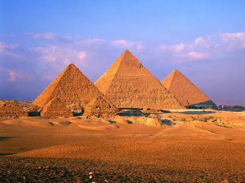
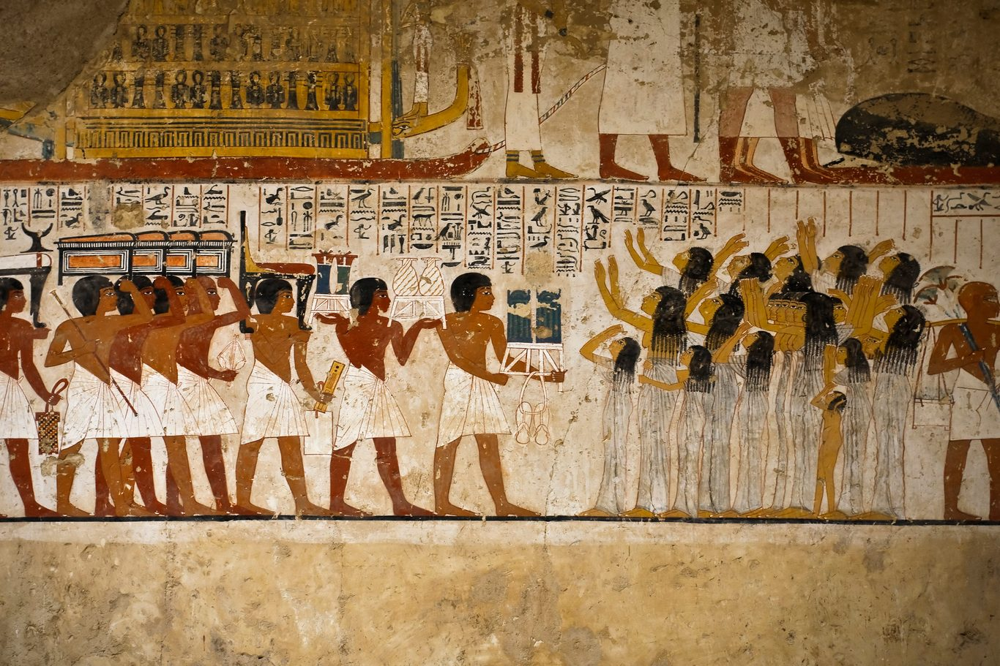
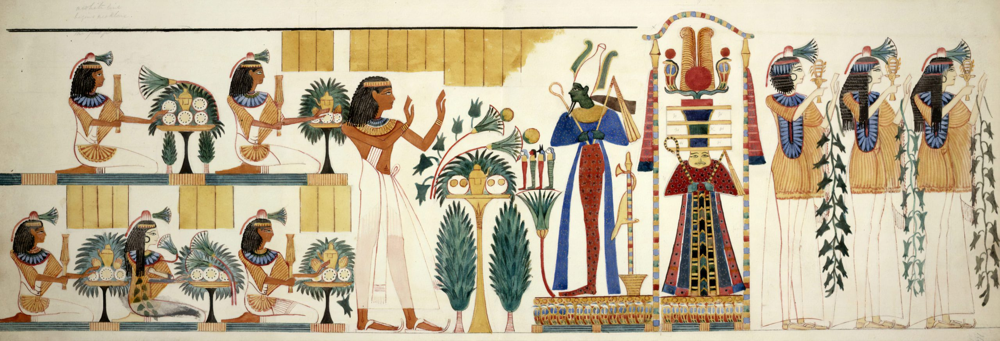

Ang kabihasnang Egypt ay umusbong sa paligid ng Ilog Nile, na itinuturing na pinakamahabang ilog sa daigdig. Malaki ang naitulong nito sa mga Egyptian dahil nagamit ito sa pagsasaka, paglalakbay, at pag-uugnayan ng mga pamayanan. Ginamit din ang tubig mula sa ilog sa paggawa ng mga kanal, sistema ng irigasyon, at mga imbakan ng tubig.
Bukod sa Ilog Nile, nakatulong din ang malawak na disyerto sa paligid ng Egypt. Nagsilbi itong likas na proteksiyon laban sa mga mananakop. Dahil sa mga pakinabang na ito, unti-unting umunlad ang mga pamayanan sa Egypt. Kasabay nito, nagsimulang umusbong ang kanilang pamahalaan sa ilalim ng mga hari o pharaoh, pati na rin ang kanilang kultura.

Ibinatay ng mga sinaunang Ehipsiyo ang kanilang buong pag-uugali sa ma'at, isang pangunahing kultural na halaga na kumakatawan sa katotohanan, kosmikong balanse, at katarungan. Ang prinsipyong ito ay nangangailangan ng mga indibidwal ng lahat ng uri ng lipunan na kumilos nang may katapatan, igalang ang kanilang mga kapitbahay, at wastong pangalagaan ang kanilang mga pamilya.
Dahil tinitingnan nila ang kanilang buhay sa lupa bilang isang pansamantalang paghahanda para sa kawalang-hanggan, ang kanilang pang-araw-araw na kilos, pagsusumikap, at mga pagpiling moral ay direktang naglalayong makamit ang isang paborableng paghatol sa kabilang buhay.
Ang toothpaste ng mga tao sa Sinaunang Ehipto ay pinaghaluan na mint, rock salt, pepper, and dried iris flowers.
Pangunahing umasa ang mga Ehipsiyo sa mga asno at bangka para sa paglalakbay at pagdadala ng mabibigat na kargamento.
Pinapalamig ng mga pamilya ang mga inumin sa pamamagitan ng paglalagay ng mga butas-butas na garapon ng palayok sa loob ng malalalim na hukay na hinukay sa lupa.

Hinubog ng Ilog Nile at ng kapaligiran ang pang-araw-araw na pamumuhay ng mga Ehipsiyo. Ang taunang pagbaha ng Nile ay nag-iwan ng matabang lupa na nakatulong sa kanilang pagsasaka, habang ang ilog ay nagsilbing daanan para sa transportasyon at kalakalan. Nakaayon din sa mga panahon at siklo ng Nile ang pagpaplano ng kanilang mga gawaing agrikultural. Mahalaga ang organisadong paggawa at pagtutulungan sa pagtatayo ng mga piramide, templo, at iba pang pampublikong proyekto.
Nakatulong ang mahusay na pamamahala sa tubig, agrikultura, at likas na yaman upang mapanatili ang pagkain at seguridad ng lipunan. Dahil dito, nagkaroon ang mga Ehipsiyo ng pagkakataong mapaunlad ang kanilang sining, agham, arkitektura, at iba pang bahagi ng kanilang kultura.
Mahalaga ang pagkain upang magkaroon sila ng lakas. Kabilang dito ang tinapay, isda, gulay, at prutas.
Ang Ilog Nile ang pangunahing pinagkukunan nila ng tubig para sa pag-inom at pagsasaka.
Gumagamit sila ng putik at tuyong ladrilyo sa paggawa ng kanilang mga tahanan.
Ipinapakita nila ang pagmamahal sa pamamagitan ng pag-aalaga at paggalang sa kanilang pamilya.

PANOORIN
Panoorin ang video upang matuto nang higit pa tungkol sa Sinaunang Ehipto.
ANG KOPONAN
Kilalanin ang mga taong nasa likod ng Pamana ng Ehipto at ang kanilang ambag sa aming proyekto.
Kilalanin ang Koponan →Dapat lagpasan ng mga mag-aaral ang karaniwang pagtuon sa mga pharaoh at mummy upang kilalanin na ang mga ordinaryong mamamayan, magsasaka, at mga bihasang artisano ang tunay na nagtaguyod sa kahanga-hangang mga tagumpay ng lipunan sa larangan ng ekonomiya at arkitektura. Ang pag-aaral sa kabihasnang ito ay nangangailangan ng pagsusuri batay sa sarili nitong masalimuot na pananaw sa mundo, sa halip na ilapat ang mga makabagong pamantayan sa kanilang pamumuhay na lubos na nakabatay sa relihiyon at hirarkiya.